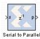

|
|
The Serial to Parallel block takes a series of inputs of any size and creates a single output of a specified multiple of that size. The input series can be ordered either with the most significant word first or the least significant word first.
Common Options in Block Parameter Dialog Boxes.An error is reported when the number of output bits cannot be divided evenly by the number of input bits. The minimum latency for this block is zero.